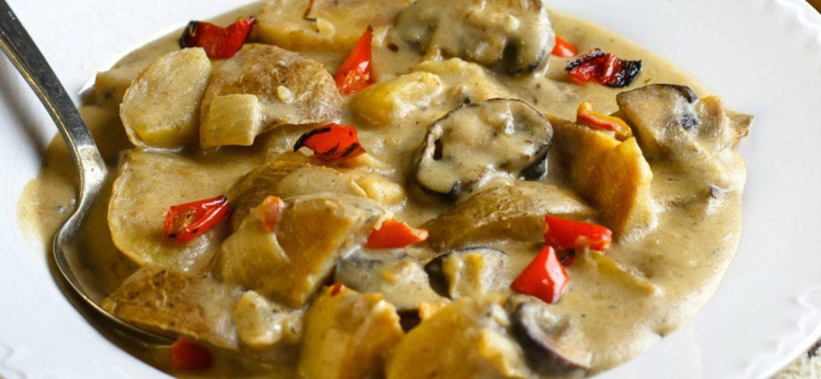

HAUTATUD KARTUL SEENTEGA

Retsept
| Koostisosad |
Kogus |
| Kartul |
3 tükki |
| Kuivatatud sült |
50 grammi |
| Sibul |
1 tükk |
| Või |
3 laualusikat |
| Koor |
2 laualusikat |
| Nisujahu |
1 teelusikas |
| Lauasool |
1 teelusikas |
| Jahvatatud must pipar |
0,3 teelusikat |
| Vesi |
150 grammi |
Valmistamine
- Hästi pestud seened (võite võtta kõik kuivad seened) valage 2 tundi vett, seejärel hakkige peeneks. Koori sibul ja haki peeneks. Koori ja tükelda kartulid.
- Segage sibul, kartul, seened ja asetage kastrulisse. Lisage 0.5 tassi vett, õli ja hautage kaane all tasasel tulel, kuni kartul on pehme (vajadusel lisage veel vett).
- Sega hapukoor jahuga, lisa sool ja pipar.
- Lahjendage hapukoor 1 spl. lusikas vett, segage hoolikalt, maitsestage hautatud köögiviljad saadud kastmega ja keetke veel 5-10 minutit. Piserdage valmis tassi värskete ürtidega.